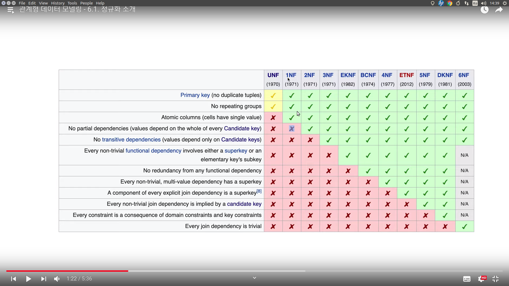
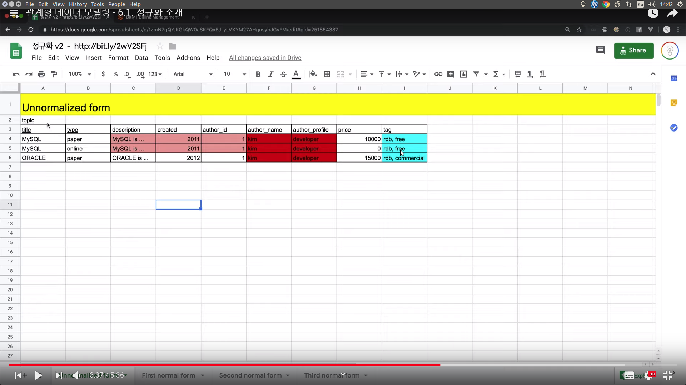

This is personal study note
Copyright and original reference are from:
https://www.youtube.com/watch?v=iu8W0zCiGb8&list=PLuHgQVnccGMDF6rHsY9qMuJMd295Yk4sa
================================================================================
refined_data_for_RDB_table=normalization(unrefined_data)
normalization: recipe
unrefined_data: raw table
refined_data_for_RDB_table: table which fits to RDB
================================================================================

unf: un normalized form table
1nf: first normal form table (each column should be atomic)
2nf: second normal form table (nor partial dependencies)
...
6nf: ideal form table
industry: unf - 3nf
research: eknf -
================================================================================

- title+type --> composite key, primary key (each row is identified by those 2 columns)
- tag column: "bad column" because it has 2 values in one field
- author_name, author_profile: "bad column" because they're duplicated in rows
- Due to those "bad columns", unnormalized form table is not fit to RDB
================================================================================
Process: unf -> 1nf -> 2nf -> 3nf